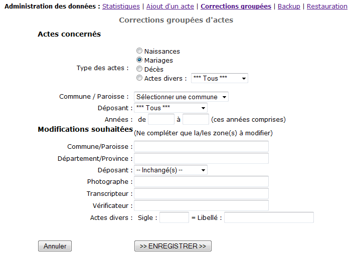

Retour à la liste des fichiers d'aide
L'administration des données permet de réaliser quelques tâches moins courantes mais utiles à la bonne gestion de la base expoactes. Une de ces actions consiste en la réalisation des copies de sécurités des données ou "backup" et parfois en la restauration de données sauvegardées. Cette tâche importante est traitée dans un chapitre spécifique consacré au backup et à la restauration.
Ces fonctions ne sont accessibles qu'aux personnes ayant un niveau d'accès de 8 au moins.
La gestion des données de géolocalisatuion fait l'objet d'une page spécifique.
Pour le reste une autre tâche parfois nécessaire consiste à recalculer les statistiques relatives aux communes. En effet, pour alléger le travail du serveur et accélérer le temps de réponse du site, le décompte des nombres d'actes par commune est calculé au moment où les données sont chargée puis est enregistré dans une table spéciale qui contient ainsi les statistiques détaillées sur le contenu de la base de données.
Il peut arriver que, lorsqu'une opération de manipulation des données (chargement, édition, suppression,...) est interrompue pour une rason imprévisible, que les statistiques ne soient plus exactes : les chiffres afficher dans la page d'accueil ne reflètent plus exactement la situation de la base de données. Il faut alors provoquer le recalcul des statistiques. Pour cela, sélectionner le menu "Administrer les données" :
Il suffit alors de cliquer sur le type des actes dont il convient de recalculer les statistiques : Naissance, Mariage, Décès ou Divers. Le système supprimer alors toutes les statistiques sur ce type d'acte puis examine tous les actes de ce type pour recalculer les statistiques. Cette opération est parfois assez longue lorsque la base est conséquente et il faut bien surveiller qu'elle se termine complétement. Au besoin, il faut cliquer sur le lien proposant de continuer l'opération sinon certaines communes ne seront pas reprises dans l'inventaire et ne seront que partiellement accessibles à la consultation.
Lorsque la procédure de recalcul des statistiques indiques que les dates sont mal encodées, cela signifie que le logiciel n'a pas pu interpréter correctement les dates lors que chargement et qu'elle sont donc inconnues pour lui. Il vaut mieux dans ce cas supprimer la commune puis recharger le actes concernés.
C'est également au cours du recalcul des statistiques que le logiciel interroge GoogleMaps pour connaître les coordonnées géographiques des lieux qui ne sont pas encore codés dans la base. Cette opération n'est effectuée que pour les lieux non encore codés.
Cet écran permet d'enregistrer un acte qui aurait été oublié ou supprimé lors de l'encodage ou du chargement. Ce n'est en aucun cas un outil d'encodage systématique des actes. En effet, pratiquement aucune vérification n'est effectuée par le logiciel.
Cet écran permet de modifier facilement une grande quantité de données. C'est parfois nécessaire pour corriger un nom de commune ou de département sans devoir recharger toutes les données.
Avec la version 3 c'est aussi un moyen pratique pour ajouter les mentions de crédits "Photographe", "Transcripteur" ou "Vérificateur" ou encore de changer le sigle ou le libellé des actes divers.

L'écran comprend deux parties :